Code
task_df <- read_rds("../../data/final/task.rds")
participants <- read_rds("../../data/final/participants.rds")We ran the following models:
Finally we compared all models in Section 2.6.
Read in data
task_df <- read_rds("../../data/final/task.rds")
participants <- read_rds("../../data/final/participants.rds")Get task 4 specific data:
data_to_screen_slope <- function(k){
return(k * 395 / 53.5)
}
task4_df <- task_df %>% filter(task == "task4") %>%
select(-slider.x, -slider.y) %>%
mutate(data.select.slope = dsgt(data.select.x, param.mu, param.sigma, param.lambda, param.p, param.q, mean.cent=FALSE),
data.ans.slope = dsgt(param.mu, param.mu, param.sigma, param.lambda, param.p, param.q, mean.cent=FALSE)) %>%
right_join(participants, by = join_by(participantId)) %>%
mutate(phy.select.x = pixel_to_phy_x(pixel.select.x, pixelToMM),
phy.select.y = pixel_to_phy_y(pixel.select.y, pixelToMM),
va.select.x = vis_angle(phy.select.x, dist_to_screen),
va.select.y = vis_angle(phy.select.y, dist_to_screen)) %>%
mutate(data.ans.x = param.mu,
data.ans.y = 1 / 2 * (psgt(data.ans.x + tolerance, param.mu, param.sigma, param.lambda, param.p, param.q, mean.cent = FALSE) +
psgt(data.ans.x - tolerance, param.mu, param.sigma, param.lambda, param.p, param.q, mean.cent = FALSE))) %>%
mutate(pixel.ans.x = data_to_pixel_x(data.ans.x),
pixel.ans.y = data_to_pixel_y(data.ans.y)) %>%
mutate(phy.ans.x = pixel_to_phy_x(pixel.ans.x, pixelToMM),
phy.ans.y = pixel_to_phy_y(pixel.ans.y, pixelToMM)) %>%
mutate(va.ans.x = vis_angle(phy.ans.x, dist_to_screen),
va.ans.y = vis_angle(phy.ans.y, dist_to_screen)) task4_df %>% ggplot(aes(x = data_to_screen_slope(data.select.slope) - data_to_screen_slope(data.ans.slope))) +
geom_dots()
task4_df %>% ggplot(aes(x = va.ans.x - va.select.x)) + geom_dots()
task4_df %>% ggplot(aes(x = va.ans.y - va.select.y)) + geom_dots()
task4_df %>% ggplot(aes(x = atan(va.ans.y / va.ans.x) * 180 / pi)) + geom_dots()
task4_df %>% ggplot(aes(x = va.ans.y / va.ans.x, y = data.ans.slope)) +
geom_point() + coord_equal()
task4_df %>% ggplot(aes(x = data.select.slope - data.ans.slope)) +
geom_dots()
task4_df %>% filter(data.select.slope - data.ans.slope == 0)
task4_df %>% ggplot(aes(x = atan(data.select.slope) * 180 / pi - atan(data.ans.slope) * 180 / pi)) +
geom_dots()
task4_df %>% ggplot(aes(x = atan(data_to_screen_slope(data.select.slope)) * 180 / pi - atan(data_to_screen_slope(data.ans.slope)) * 180 / pi)) +
stat_ecdf()
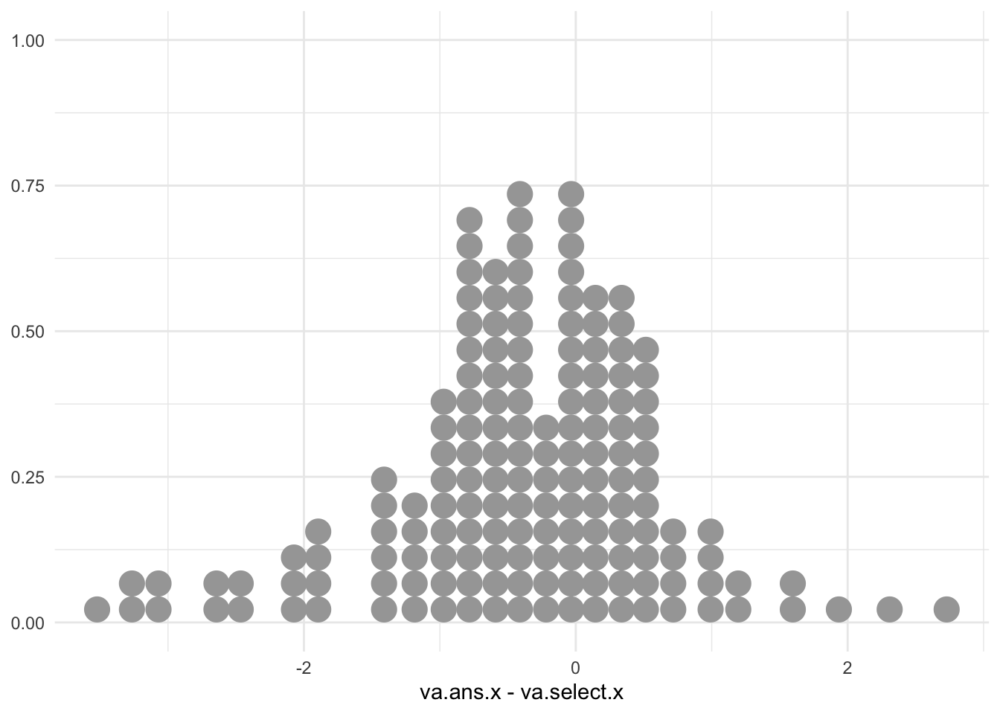
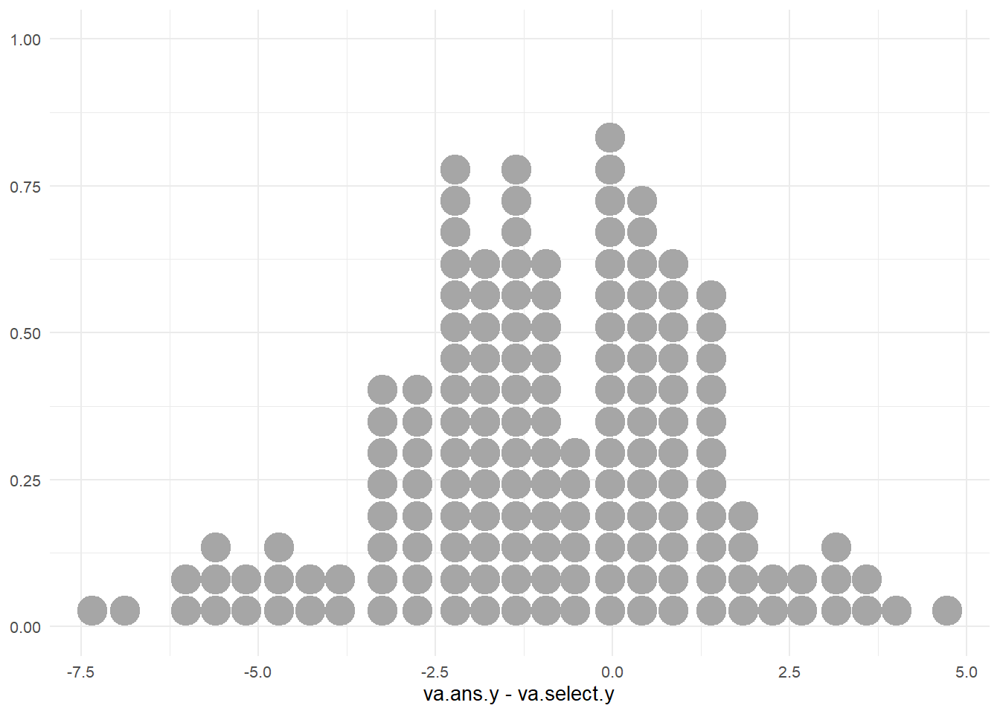

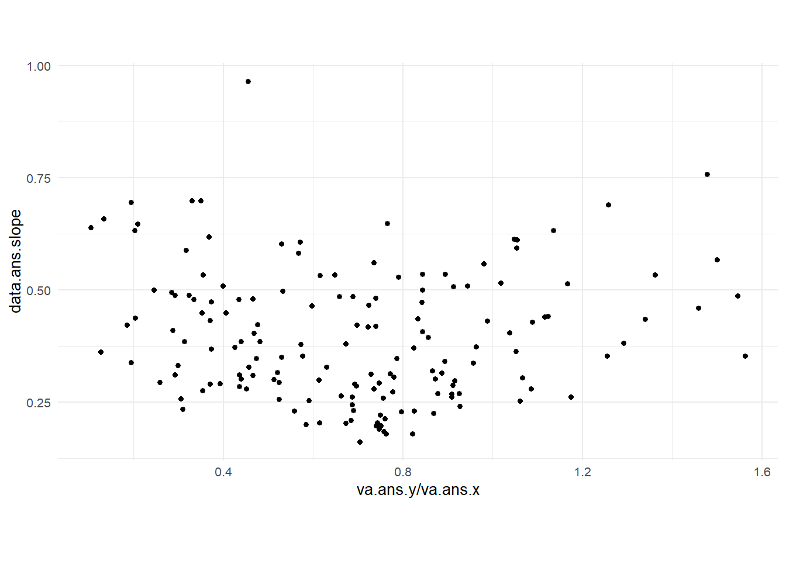

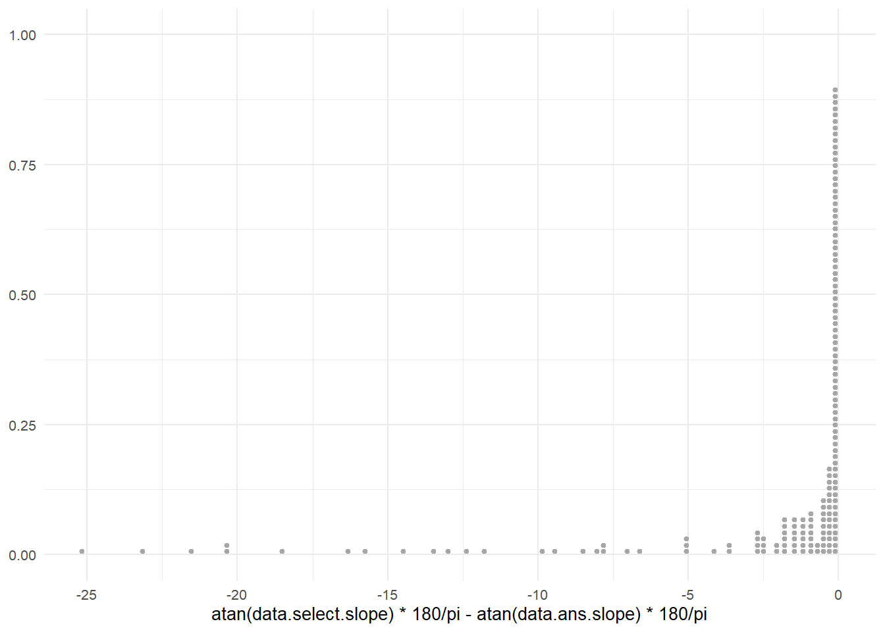
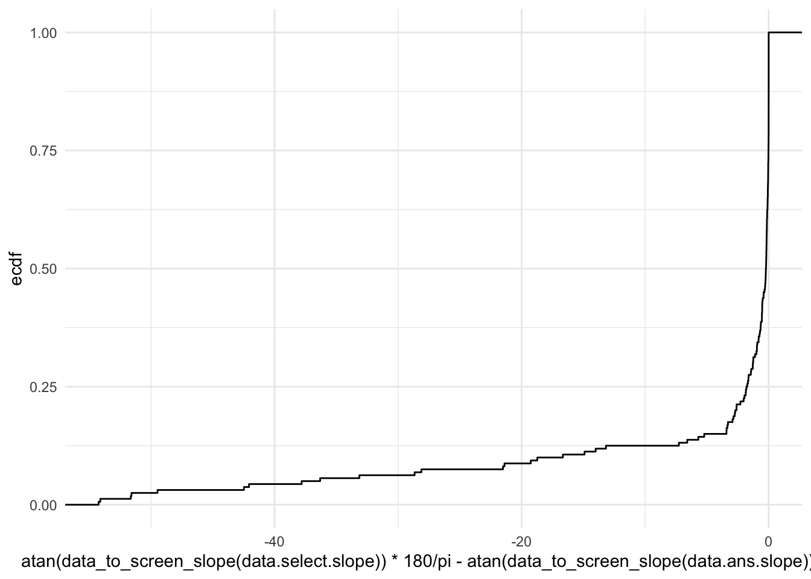
If we map the mathematical slope to the actual slope, this is what we get:
task4_df %>% ggplot(aes(x = data_to_screen_slope(data.select.slope),
y = data_to_screen_slope(data.ans.slope))) +
geom_point(alpha = 0.5) +
coord_equal()
task4_df %>% ggplot(aes(x = data_to_screen_slope(data.select.slope) - data_to_screen_slope(data.ans.slope))) +
geom_dots()
Let’s first see the distribution of signed error:
task4_df %>% ggplot(aes(x = data.select.slope - data.ans.slope)) +
geom_dots()
task4_df %>% ggplot(aes(y = data.select.slope - data.ans.slope, x = dist_to_screen)) +
geom_point(alpha = 0.5)
Let’s see if there’s any obvious relation between signed error and parameters of the distribution:
task4_df %>% ggplot(aes(y = data.select.slope - data.ans.slope, x = dist_to_screen)) +
geom_point()
task4_df %>% ggplot(aes(y = data.select.slope - data.ans.slope, x = param.mu)) +
geom_point()
task4_df %>% ggplot(aes(y = data.select.slope - data.ans.slope, x = param.sigma)) +
geom_point()
task4_df %>% ggplot(aes(y = data.select.slope - data.ans.slope, x = param.lambda)) +
geom_point()
task4_df %>% ggplot(aes(y = data.select.slope - data.ans.slope, x = param.p)) +
geom_point()
task4_df %>% ggplot(aes(y = data.select.slope - data.ans.slope, x = param.q)) +
geom_point()
task4_df %>% ggplot(aes(x = data.select.slope - data.ans.slope)) +
geom_dots()Math model:
\[\begin{align*} \text{error_i} &\sim \text{Exponential}(\lambda_{\text{PID}[i]}) \\ \log(\lambda_j) &\sim \mathcal{N}(\mu_\lambda, \sigma_\lambda) \\ \mu_\lambda &\sim \mathcal{N}(0, 1) \\ \sigma_\lambda &\sim \text{Half-Cauchy}(0, 1) \end{align*}\]
Formula:
f <- bf(error ~ 0,
mu ~ (1 | participantId),
family = exponential())
# mu has log-link, so we don't pose any bounds on it
p <- c(
prior(normal(0, 1), class = Intercept),
prior(normal(0, 1), class = sd, group = participantId, lb = 0)
)task4_df %>% mutate(error = abs(data_to_screen_slope(data.select.slope) - data_to_screen_slope(data.ans.slope))) %>%
get_prior(f, data = .)
task4_df %>% mutate(error = abs(data_to_screen_slope(data.select.slope) - data_to_screen_slope(data.ans.slope))) %>%
make_stancode(f, data = ., prior = p)Fit the model:
model.exponential <- task4_df %>%
mutate(error = abs(data_to_screen_slope(data.ans.slope) - data_to_screen_slope(data.select.slope))) %>%
# brms need rsp > 0
mutate(error = ifelse(abs(error) < tolerance, tolerance, error)) %>%
brm(formula = f,
data = .,
prior = p,
chains = 4,
file = "models/task4.exponential",
file_refit = "on_change",
save_pars = save_pars(all = TRUE),
iter = 6000
)Check fit:
summary(model.exponential) Family: exponential
Links: mu = log
Formula: error ~ 0
mu ~ (1 | participantId)
Data: . (Number of observations: 160)
Draws: 4 chains, each with iter = 6000; warmup = 3000; thin = 1;
total post-warmup draws = 12000
Multilevel Hyperparameters:
~participantId (Number of levels: 16)
Estimate Est.Error l-95% CI u-95% CI Rhat Bulk_ESS Tail_ESS
sd(Intercept) 1.54 0.28 1.09 2.17 1.00 1857 3582
Regression Coefficients:
Estimate Est.Error l-95% CI u-95% CI Rhat Bulk_ESS Tail_ESS
Intercept -1.90 0.38 -2.61 -1.11 1.00 1476 2458
Draws were sampled using sampling(NUTS). For each parameter, Bulk_ESS
and Tail_ESS are effective sample size measures, and Rhat is the potential
scale reduction factor on split chains (at convergence, Rhat = 1).plot(model.exponential)
pp_check(model.exponential, ndraws = 100)
pp_check(model.exponential, ndraws = 100, type = "pit_ecdf")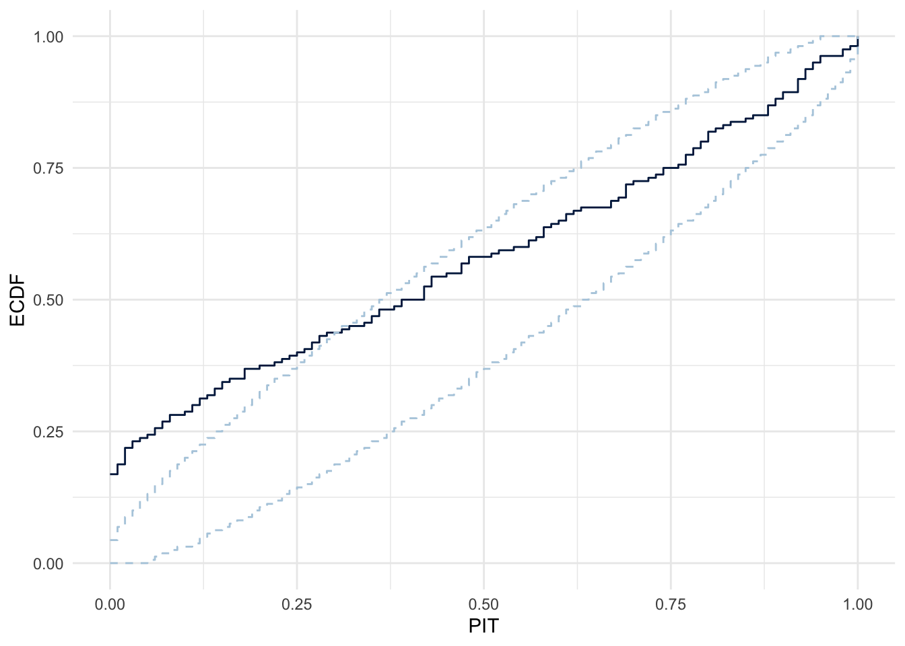
model.exponential %>% get_variables() [1] "b_Intercept"
[2] "sd_participantId__Intercept"
[3] "Intercept"
[4] "r_participantId[558d8d71fdf99b534f79b352,Intercept]"
[5] "r_participantId[5c8f2ac8d7ecab0018d529aa,Intercept]"
[6] "r_participantId[667433338e6cc9e53c828774,Intercept]"
[7] "r_participantId[66803a896850f7964079120f,Intercept]"
[8] "r_participantId[67104869a47a61b561900be7,Intercept]"
[9] "r_participantId[671e36cc7fa293418ae65232,Intercept]"
[10] "r_participantId[6740e1e09ca406ab781318cb,Intercept]"
[11] "r_participantId[67e2ab30a61684eccd40a3e3,Intercept]"
[12] "r_participantId[67e2f5ebbe69a58c40a5d550,Intercept]"
[13] "r_participantId[67e557aa25a43e8dde6c806c,Intercept]"
[14] "r_participantId[67ebfd4d8ea1101322300f73,Intercept]"
[15] "r_participantId[67ee2686d7cfcbbd9d87dd04,Intercept]"
[16] "r_participantId[67f03733938aa3f0d17ce8a8,Intercept]"
[17] "r_participantId[67f441842da280dba751a76b,Intercept]"
[18] "r_participantId[67f9736009c0ccdd5034f448,Intercept]"
[19] "r_participantId[67fbed03e8c70e38014c41b3,Intercept]"
[20] "lprior"
[21] "lp__"
[22] "z_1[1,1]"
[23] "z_1[1,2]"
[24] "z_1[1,3]"
[25] "z_1[1,4]"
[26] "z_1[1,5]"
[27] "z_1[1,6]"
[28] "z_1[1,7]"
[29] "z_1[1,8]"
[30] "z_1[1,9]"
[31] "z_1[1,10]"
[32] "z_1[1,11]"
[33] "z_1[1,12]"
[34] "z_1[1,13]"
[35] "z_1[1,14]"
[36] "z_1[1,15]"
[37] "z_1[1,16]"
[38] "accept_stat__"
[39] "stepsize__"
[40] "treedepth__"
[41] "n_leapfrog__"
[42] "divergent__"
[43] "energy__" model.exponential %>% spread_draws(b_Intercept, sd_participantId__Intercept) %>%
mutate(lambda = exp(b_Intercept)) %>%
pivot_longer(5:6) %>%
ggplot(aes(x = value, y = name)) +
stat_halfeye()
Overlay plot:
prediction <- task4_df %>%
mutate(error = abs(data_to_screen_slope(data.ans.slope) - data_to_screen_slope(data.select.slope))) %>%
mutate(error = ifelse(abs(error) < tolerance, tolerance, error)) %>%
add_predicted_draws(model.exponential, re_formula = NA)
prediction %>% ggplot() +
stat_slab(aes(x = .prediction),
fill = "skyblue", alpha = 0.8) +
geom_dots(data = task4_df, aes(x = data_to_screen_slope(data.ans.slope) - data_to_screen_slope(data.select.slope)))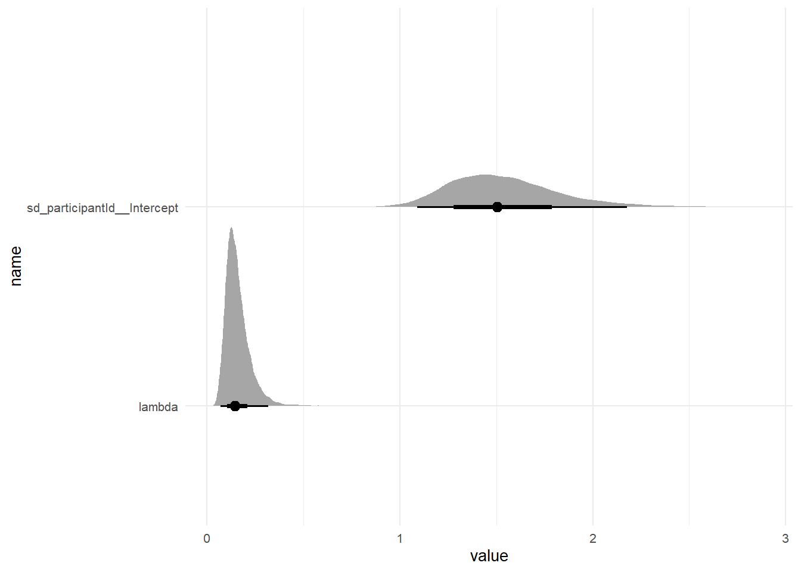
task4_df %>% modelr::data_grid(error = 0) %>%
add_predicted_draws(model.exponential, ndraws = 100, re_formula = NA) %>%
ggplot() +
stat_slab(aes(x = .prediction),
fill = "lightblue", alpha = 1) +
geom_dots(data = task4_df, aes(x = data_to_screen_slope(data.ans.slope) - data_to_screen_slope(data.select.slope))) 
Lomax is Pareto Type II distribution. We had similar models for task 2.
Note that the Half-Cauchy prior for hyperpriors led to divergent transitions, so we switched to truncated normal.
lomax_family <- custom_family(
"lomax",
dpars = c("mu", "lambda", "alpha"), # includes mu as required
links = c("identity", "log", "log"), # appropriate links
lb = c(-Inf, 0, 0), # appropriate bounds
type = "real"
)
stan_funs <- "
real lomax_lpdf(real y, real mu, real lambda, real alpha) {
return pareto_type_2_lpdf(y | 0, lambda, alpha); # mu is ignored
}
real lomax_rng(real mu, real lambda, real alpha) {
return pareto_type_2_rng(0, lambda, alpha); # mu is ignored
}
"# Define the formula for the model
f <- bf(
error ~ 0,
mu ~ 0,
alpha ~ (1 | participantId),
lambda ~ (1 | participantId)
)
p <- c(
prior(normal(0, 1), class = Intercept, dpar = alpha),
prior(normal(0, 1), class = sd, group = participantId, dpar = alpha, lb = 0),
prior(normal(0, 1), class = Intercept, dpar = lambda),
prior(normal(0, 1), class = sd, group = participantId, dpar = lambda, lb = 0)
)model.lomax <- task4_df %>% mutate(error = abs(data_to_screen_slope(data.select.slope) - data_to_screen_slope(data.ans.slope))) %>%
mutate(error = ifelse(error < tolerance, tolerance, error)) %>%
brm(
formula = f,
data = .,
family = lomax_family,
prior = p,
stanvars = stanvar(scode = stan_funs, block = "functions"),
chains = 4,
cores = 4,
file = "models/task4.lomax",
file_refit = "on_change",
control = list(adapt_delta = 0.99),
iter = 4000,
save_pars = save_pars(all = TRUE)
)Check fit:
# pairs(model.lomax)
summary(model.lomax) Family: lomax
Links: mu = identity; alpha = log; lambda = log
Formula: error ~ 0
mu ~ 0
alpha ~ (1 | participantId)
lambda ~ (1 | participantId)
Data: . (Number of observations: 160)
Draws: 4 chains, each with iter = 4000; warmup = 2000; thin = 1;
total post-warmup draws = 8000
Multilevel Hyperparameters:
~participantId (Number of levels: 16)
Estimate Est.Error l-95% CI u-95% CI Rhat Bulk_ESS
sd(alpha_Intercept) 0.40 0.29 0.02 1.08 1.00 1203
sd(lambda_Intercept) 2.26 0.47 1.52 3.39 1.00 1793
Tail_ESS
sd(alpha_Intercept) 2793
sd(lambda_Intercept) 3698
Regression Coefficients:
Estimate Est.Error l-95% CI u-95% CI Rhat Bulk_ESS Tail_ESS
lambda_Intercept -2.63 0.63 -3.83 -1.37 1.00 3554 4321
alpha_Intercept 0.00 0.28 -0.51 0.57 1.00 6133 5624
Draws were sampled using sampling(NUTS). For each parameter, Bulk_ESS
and Tail_ESS are effective sample size measures, and Rhat is the potential
scale reduction factor on split chains (at convergence, Rhat = 1).plot(model.lomax)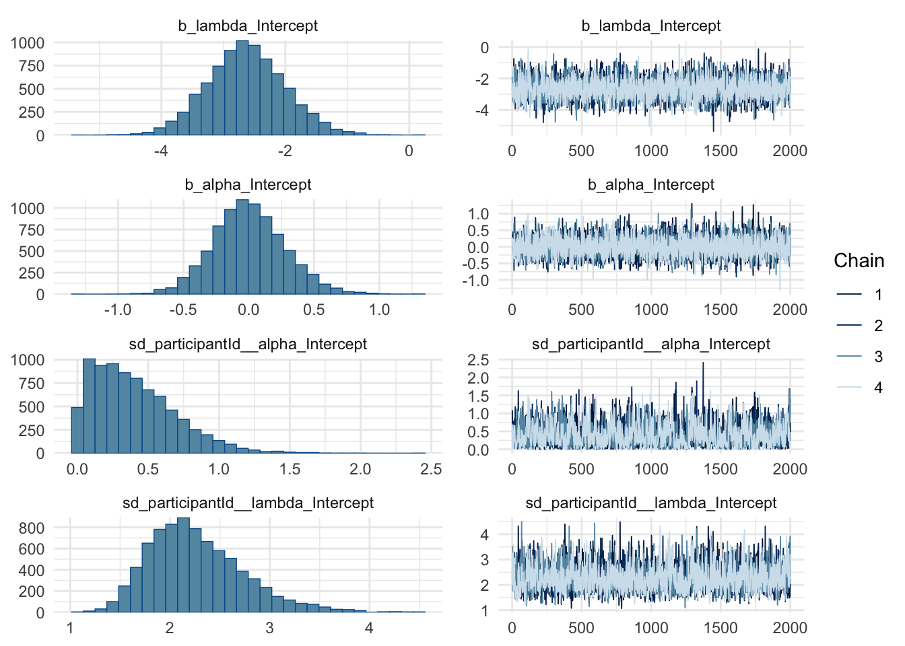
Let’s check the posterior of alpha and lambda:
model.lomax %>% spread_draws(`^b_.*`, regex = TRUE) %>%
mutate(b_alpha = exp(b_alpha_Intercept), b_lambda = exp(b_lambda_Intercept)) %>%
pivot_longer(6:7) %>%
ggplot(aes(x = value, y = name)) +
stat_halfeye() +
facet_wrap(~name, scales = "free") +
geom_vline(xintercept = 1e-10, linetype = "dashed", color = "gray")
Define custom functions for pp_check and loo:
expose_functions(model.lomax, vectorize = TRUE)Trying to compile a simple C fileRunning /Library/Frameworks/R.framework/Resources/bin/R CMD SHLIB foo.c
using C compiler: ‘Apple clang version 17.0.0 (clang-1700.3.19.1)’
using SDK: ‘’
clang -arch arm64 -I"/Library/Frameworks/R.framework/Resources/include" -DNDEBUG -I"/Users/shenglong/Library/Caches/org.R-project.R/R/renv/cache/v5/macos/R-4.4/aarch64-apple-darwin20/Rcpp/1.1.0/0d3d8867aa41b0d9ad113b50c169ecb2/Rcpp/include/" -I"/Users/shenglong/Downloads/vis-decode-osf/renv/library/macos/R-4.4/aarch64-apple-darwin20/RcppEigen/include/" -I"/Users/shenglong/Downloads/vis-decode-osf/renv/library/macos/R-4.4/aarch64-apple-darwin20/RcppEigen/include/unsupported" -I"/Users/shenglong/Downloads/vis-decode-osf/renv/library/macos/R-4.4/aarch64-apple-darwin20/BH/include" -I"/Users/shenglong/Library/Caches/org.R-project.R/R/renv/cache/v5/macos/R-4.4/aarch64-apple-darwin20/StanHeaders/2.32.10/c35dc5b81d7ffb1018aa090dff364ecb/StanHeaders/include/src/" -I"/Users/shenglong/Library/Caches/org.R-project.R/R/renv/cache/v5/macos/R-4.4/aarch64-apple-darwin20/StanHeaders/2.32.10/c35dc5b81d7ffb1018aa090dff364ecb/StanHeaders/include/" -I"/Users/shenglong/Library/Caches/org.R-project.R/R/renv/cache/v5/macos/R-4.4/aarch64-apple-darwin20/RcppParallel/5.1.11-1/07d228a359f31d8aebe6d2f643c1f012/RcppParallel/include/" -I"/Users/shenglong/Library/Caches/org.R-project.R/R/renv/cache/v5/macos/R-4.4/aarch64-apple-darwin20/rstan/2.32.7/5f47b80f0db40503697eef138a31a6ef/rstan/include" -DEIGEN_NO_DEBUG -DBOOST_DISABLE_ASSERTS -DBOOST_PENDING_INTEGER_LOG2_HPP -DSTAN_THREADS -DUSE_STANC3 -DSTRICT_R_HEADERS -DBOOST_PHOENIX_NO_VARIADIC_EXPRESSION -D_HAS_AUTO_PTR_ETC=0 -include '/Users/shenglong/Library/Caches/org.R-project.R/R/renv/cache/v5/macos/R-4.4/aarch64-apple-darwin20/StanHeaders/2.32.10/c35dc5b81d7ffb1018aa090dff364ecb/StanHeaders/include/stan/math/prim/fun/Eigen.hpp' -D_REENTRANT -DRCPP_PARALLEL_USE_TBB=1 -I/opt/R/arm64/include -fPIC -falign-functions=64 -Wall -g -O2 -c foo.c -o foo.o
In file included from <built-in>:1:
In file included from /Users/shenglong/Library/Caches/org.R-project.R/R/renv/cache/v5/macos/R-4.4/aarch64-apple-darwin20/StanHeaders/2.32.10/c35dc5b81d7ffb1018aa090dff364ecb/StanHeaders/include/stan/math/prim/fun/Eigen.hpp:22:
In file included from /Users/shenglong/Downloads/vis-decode-osf/renv/library/macos/R-4.4/aarch64-apple-darwin20/RcppEigen/include/Eigen/Dense:1:
In file included from /Users/shenglong/Downloads/vis-decode-osf/renv/library/macos/R-4.4/aarch64-apple-darwin20/RcppEigen/include/Eigen/Core:19:
/Users/shenglong/Downloads/vis-decode-osf/renv/library/macos/R-4.4/aarch64-apple-darwin20/RcppEigen/include/Eigen/src/Core/util/Macros.h:679:10: fatal error: 'cmath' file not found
679 | #include <cmath>
| ^~~~~~~
1 error generated.
make: *** [foo.o] Error 1# Define the posterior_predict function in R as per vignette
posterior_predict_lomax <- function(i, draws, ...) {
alpha <- draws$dpars$alpha[i]
lambda <- draws$dpars$lambda[i]
# Use Stan's rng function indirectly via brms
lomax_rng(0, lambda, alpha)
}
log_lik_lomax <- function(i, prep){
alpha <- brms::get_dpar(prep, "alpha", i = i)
lambda <- brms::get_dpar(prep, "lambda", i = i)
y <- prep$data$Y[i]
lomax_lpdf(y, 0, lambda, alpha)
}
pp_check(model.lomax, ndraws = 100)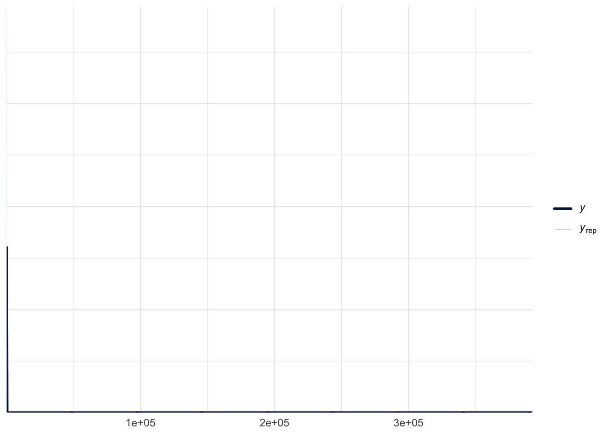
pp_check(model.lomax, ndraws = 100, type = "pit_ecdf")
Overlay plot:
prediction <- task4_df %>%
mutate(error = abs(data_to_screen_slope(data.ans.slope) - data_to_screen_slope(data.select.slope))) %>%
add_predicted_draws(model.lomax, ndraws = 100)
prediction %>% ggplot() +
stat_slab(aes(x = .prediction),
fill = "lightblue", alpha = 1) +
geom_dots(data = task4_df, aes(x = data_to_screen_slope(data.ans.slope) - data_to_screen_slope(data.select.slope)))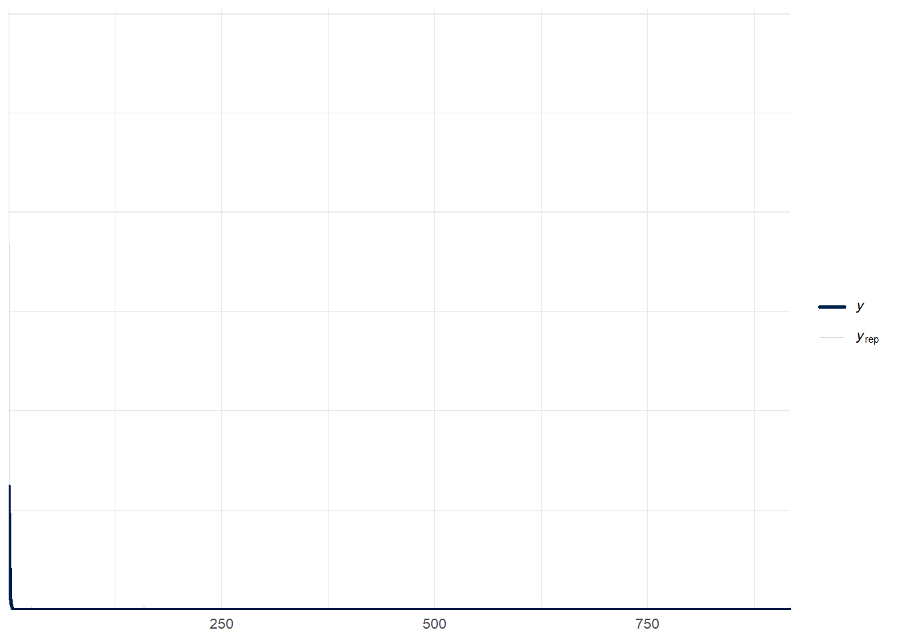
f <- bf(
error ~ 0,
mu ~ (1 | participantId), # log link
shape ~ (1 | participantId), # log link
family = weibull
)
p <- c(
prior(normal(0, 1), class = Intercept),
prior(normal(0, 1), class = sd, group = participantId, lb = 0),
prior(normal(0, 1), class = Intercept, dpar = shape),
prior(normal(0, 1), class = sd, group = participantId, dpar = shape, lb = 0)
)Fit the model:
model.weibull <- task4_df %>%
mutate(error = abs(data_to_screen_slope(data.ans.slope) - data_to_screen_slope(data.select.slope))) %>%
mutate(error = ifelse(error < tolerance, tolerance, error)) %>% # brms needs value to be > 0
brm(formula = f,
data = .,
prior = p,
chains = 4,
cores = 4,
file = "models/task4.weibull",
file_refit = "on_change",
save_pars = save_pars(all = TRUE),
iter = 6000
)Check fit and posterior:
summary(model.weibull) Family: weibull
Links: mu = log; shape = log
Formula: error ~ 0
mu ~ (1 | participantId)
shape ~ (1 | participantId)
Data: . (Number of observations: 160)
Draws: 4 chains, each with iter = 6000; warmup = 3000; thin = 1;
total post-warmup draws = 12000
Multilevel Hyperparameters:
~participantId (Number of levels: 16)
Estimate Est.Error l-95% CI u-95% CI Rhat Bulk_ESS Tail_ESS
sd(Intercept) 1.32 0.31 0.80 2.01 1.00 4453 6956
sd(shape_Intercept) 0.67 0.16 0.42 1.03 1.00 3882 6637
Regression Coefficients:
Estimate Est.Error l-95% CI u-95% CI Rhat Bulk_ESS Tail_ESS
Intercept -1.25 0.39 -2.02 -0.47 1.00 4610 6230
shape_Intercept -0.70 0.18 -1.07 -0.34 1.00 2927 4906
Draws were sampled using sampling(NUTS). For each parameter, Bulk_ESS
and Tail_ESS are effective sample size measures, and Rhat is the potential
scale reduction factor on split chains (at convergence, Rhat = 1).plot(model.weibull)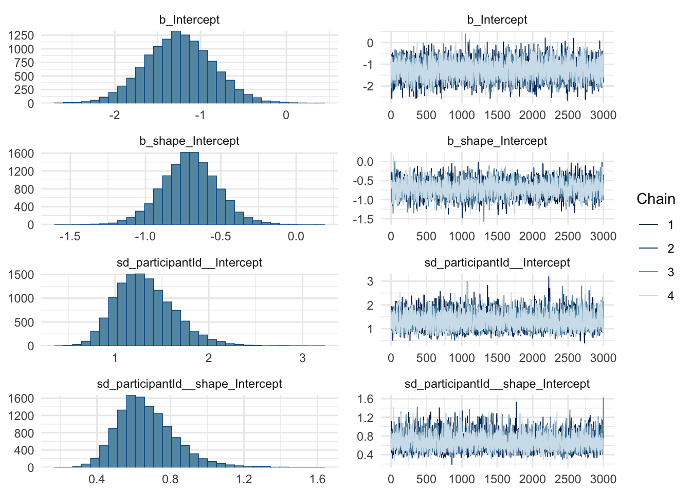
pp_check(model.weibull, ndraws = 100) +
coord_cartesian(xlim = c(0, 10)) +
theme(text = element_text(size = 10)) -> p1Coordinate system already present.
ℹ Adding new coordinate system, which will replace the existing one.pp_check(model.weibull, ndraws = 100, type = "pit_ecdf") +
theme(text = element_text(size = 10)) -> p2Save plots:
ggsave("../../figs/task4-pp-check.pdf", p1, height = 5, width = 10, unit = "cm")
ggsave("../../figs/task4-pit-ecdf.pdf", p2, height = 5, width = 10, unit = "cm")model.weibull %>% get_variables() [1] "b_Intercept"
[2] "b_shape_Intercept"
[3] "sd_participantId__Intercept"
[4] "sd_participantId__shape_Intercept"
[5] "Intercept"
[6] "Intercept_shape"
[7] "r_participantId[558d8d71fdf99b534f79b352,Intercept]"
[8] "r_participantId[5c8f2ac8d7ecab0018d529aa,Intercept]"
[9] "r_participantId[667433338e6cc9e53c828774,Intercept]"
[10] "r_participantId[66803a896850f7964079120f,Intercept]"
[11] "r_participantId[67104869a47a61b561900be7,Intercept]"
[12] "r_participantId[671e36cc7fa293418ae65232,Intercept]"
[13] "r_participantId[6740e1e09ca406ab781318cb,Intercept]"
[14] "r_participantId[67e2ab30a61684eccd40a3e3,Intercept]"
[15] "r_participantId[67e2f5ebbe69a58c40a5d550,Intercept]"
[16] "r_participantId[67e557aa25a43e8dde6c806c,Intercept]"
[17] "r_participantId[67ebfd4d8ea1101322300f73,Intercept]"
[18] "r_participantId[67ee2686d7cfcbbd9d87dd04,Intercept]"
[19] "r_participantId[67f03733938aa3f0d17ce8a8,Intercept]"
[20] "r_participantId[67f441842da280dba751a76b,Intercept]"
[21] "r_participantId[67f9736009c0ccdd5034f448,Intercept]"
[22] "r_participantId[67fbed03e8c70e38014c41b3,Intercept]"
[23] "r_participantId__shape[558d8d71fdf99b534f79b352,Intercept]"
[24] "r_participantId__shape[5c8f2ac8d7ecab0018d529aa,Intercept]"
[25] "r_participantId__shape[667433338e6cc9e53c828774,Intercept]"
[26] "r_participantId__shape[66803a896850f7964079120f,Intercept]"
[27] "r_participantId__shape[67104869a47a61b561900be7,Intercept]"
[28] "r_participantId__shape[671e36cc7fa293418ae65232,Intercept]"
[29] "r_participantId__shape[6740e1e09ca406ab781318cb,Intercept]"
[30] "r_participantId__shape[67e2ab30a61684eccd40a3e3,Intercept]"
[31] "r_participantId__shape[67e2f5ebbe69a58c40a5d550,Intercept]"
[32] "r_participantId__shape[67e557aa25a43e8dde6c806c,Intercept]"
[33] "r_participantId__shape[67ebfd4d8ea1101322300f73,Intercept]"
[34] "r_participantId__shape[67ee2686d7cfcbbd9d87dd04,Intercept]"
[35] "r_participantId__shape[67f03733938aa3f0d17ce8a8,Intercept]"
[36] "r_participantId__shape[67f441842da280dba751a76b,Intercept]"
[37] "r_participantId__shape[67f9736009c0ccdd5034f448,Intercept]"
[38] "r_participantId__shape[67fbed03e8c70e38014c41b3,Intercept]"
[39] "lprior"
[40] "lp__"
[41] "z_1[1,1]"
[42] "z_1[1,2]"
[43] "z_1[1,3]"
[44] "z_1[1,4]"
[45] "z_1[1,5]"
[46] "z_1[1,6]"
[47] "z_1[1,7]"
[48] "z_1[1,8]"
[49] "z_1[1,9]"
[50] "z_1[1,10]"
[51] "z_1[1,11]"
[52] "z_1[1,12]"
[53] "z_1[1,13]"
[54] "z_1[1,14]"
[55] "z_1[1,15]"
[56] "z_1[1,16]"
[57] "z_2[1,1]"
[58] "z_2[1,2]"
[59] "z_2[1,3]"
[60] "z_2[1,4]"
[61] "z_2[1,5]"
[62] "z_2[1,6]"
[63] "z_2[1,7]"
[64] "z_2[1,8]"
[65] "z_2[1,9]"
[66] "z_2[1,10]"
[67] "z_2[1,11]"
[68] "z_2[1,12]"
[69] "z_2[1,13]"
[70] "z_2[1,14]"
[71] "z_2[1,15]"
[72] "z_2[1,16]"
[73] "accept_stat__"
[74] "stepsize__"
[75] "treedepth__"
[76] "n_leapfrog__"
[77] "divergent__"
[78] "energy__" model.weibull %>% spread_draws(b_Intercept, b_shape_Intercept) %>%
mutate(mu = exp(b_Intercept), shape = exp(b_shape_Intercept)) %>%
pivot_longer(6:7) %>%
ggplot(aes(x = value, y = name)) +
stat_halfeye()
Overlay plot:
# prediction <- task4_df %>%
# mutate(error = abs(data_to_screen_slope(data.ans.slope) - data_to_screen_slope(data.select.slope))) %>%
# add_predicted_draws(model.weibull, ndraws = 100)
task4_df %>% modelr::data_grid(error = 0) %>%
add_predicted_draws(model.weibull, re_formula = NA) %>%
ggplot() +
stat_slab(aes(x = .prediction),
fill = "lightblue", alpha = 1) +
geom_dots(data = task4_df, aes(x = data_to_screen_slope(data.ans.slope) - data_to_screen_slope(data.select.slope)))
task4_df %>% modelr::data_grid(error = 0,
participantId = unique(participantId)) %>%
add_predicted_draws(model.weibull, ndraws = 100) %>%
ggplot() +
stat_slab(aes(x = .prediction, group = .draw),
color = "lightblue", alpha = 0.5, fill = NA, n = 3000, linewidth = 0.5) +
scale_thickness_shared() +
coord_cartesian(xlim = c(0, 4)) +
geom_rug(data = task4_df, aes(x = data_to_screen_slope(data.ans.slope) - data_to_screen_slope(data.select.slope)), size = 0.5) +
stat_slab(data = task4_df, aes(x = data_to_screen_slope(data.ans.slope) - data_to_screen_slope(data.select.slope)),
color = "darkblue", fill = NA, n = 3000, size = 0.5) +
labs(y = "density", x = "signed error" ) +
scale_y_continuous(breaks = 0) -> pWarning: Using `size` aesthetic for lines was deprecated in ggplot2 3.4.0.
ℹ Please use `linewidth` instead.p

Save results:
ggsave("../../figs/task4.pdf", plot = p, height = 5, width = 5, units = "cm")task4_df %>% modelr::data_grid(error = 0) %>%
add_predicted_draws(model.weibull, re_formula = NA) %>%
ggplot() +
stat_slab(aes(x = .prediction),
fill = "lightblue", alpha = 1) +
geom_dots(data = task4_df, aes(x = data_to_screen_slope(data.ans.slope) - data_to_screen_slope(data.select.slope))) +
labs(y = "Probability", x = "Signed error") +
xlim(0, 5) +
theme_minimal(base_size = 8) -> p
pWarning: Removed 57 rows containing missing values or values outside the scale range
(`stat_slabinterval()`).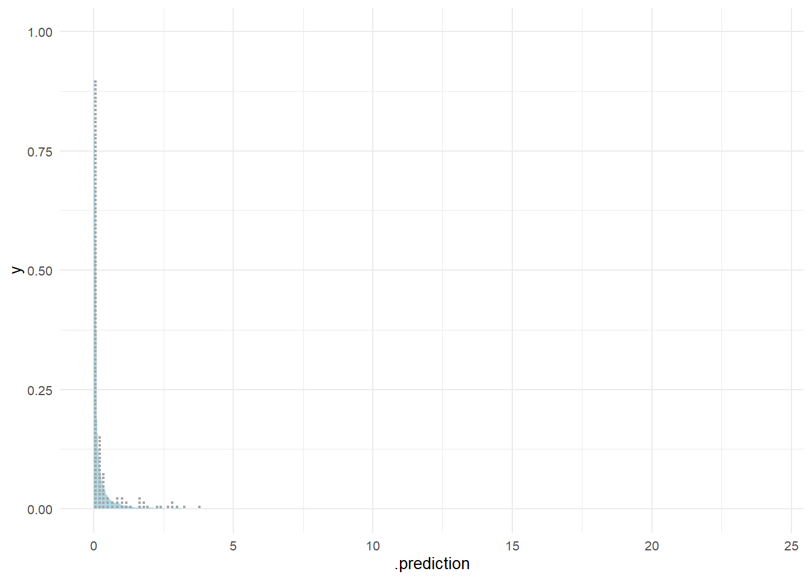
f <- bf(error ~ 0,
mu ~ (1 | participantId),
sigma ~ (1 | participantId),
family = lognormal())
p <- c(
prior(normal(0, 1), class = Intercept),
prior(normal(0, 1), class = sd, group = participantId, lb = 0),
prior(normal(0, 1), class = Intercept, dpar = sigma),
prior(normal(0, 1), class = sd, group = participantId, dpar = sigma, lb = 0)
)model.lognormal <- task4_df %>%
mutate(error = abs(data_to_screen_slope(data.ans.slope) - data_to_screen_slope(data.select.slope))) %>%
mutate(error = ifelse(error < tolerance, tolerance, error)) %>% # brms needs value to be > 0
brm(formula = f,
data = .,
prior = p,
chains = 4,
cores = 4,
file = "models/task4.lognormal",
file_refit = "on_change",
save_pars = save_pars(all = TRUE),
control = list(adapt_delta = 0.99),
iter = 4000
)Check fit and posterior:
summary(model.lognormal) Family: lognormal
Links: mu = identity; sigma = log
Formula: error ~ 0
mu ~ (1 | participantId)
sigma ~ (1 | participantId)
Data: . (Number of observations: 160)
Draws: 4 chains, each with iter = 4000; warmup = 2000; thin = 1;
total post-warmup draws = 8000
Multilevel Hyperparameters:
~participantId (Number of levels: 16)
Estimate Est.Error l-95% CI u-95% CI Rhat Bulk_ESS Tail_ESS
sd(Intercept) 2.13 0.39 1.47 2.99 1.00 2314 3928
sd(sigma_Intercept) 0.85 0.18 0.57 1.27 1.00 2056 3683
Regression Coefficients:
Estimate Est.Error l-95% CI u-95% CI Rhat Bulk_ESS Tail_ESS
Intercept -2.82 0.54 -3.85 -1.72 1.00 2264 3201
sigma_Intercept 1.02 0.21 0.58 1.44 1.00 1591 2622
Draws were sampled using sampling(NUTS). For each parameter, Bulk_ESS
and Tail_ESS are effective sample size measures, and Rhat is the potential
scale reduction factor on split chains (at convergence, Rhat = 1).plot(model.lognormal)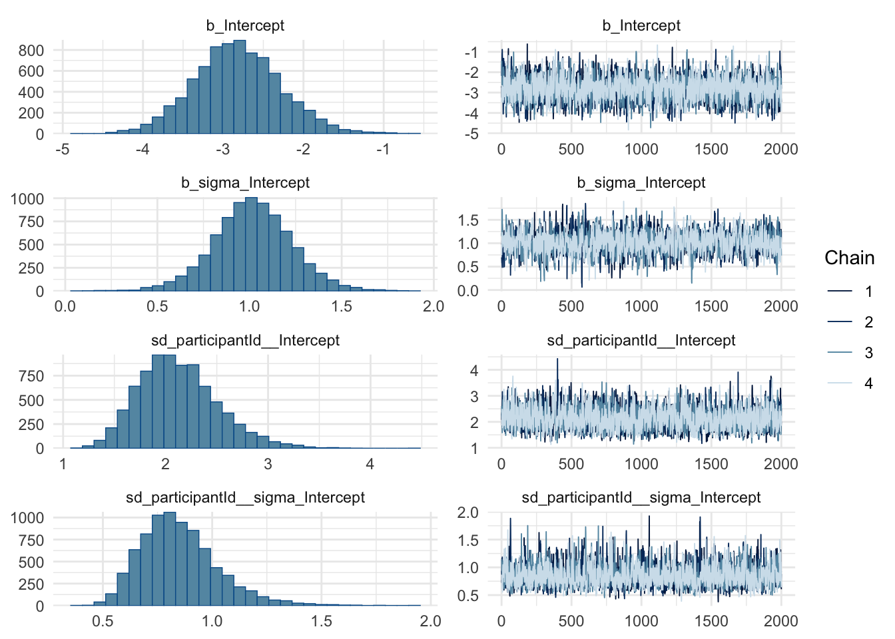
pp_check(model.lognormal, ndraws = 100)
pp_check(model.lognormal, ndraws = 100, type = "pit_ecdf")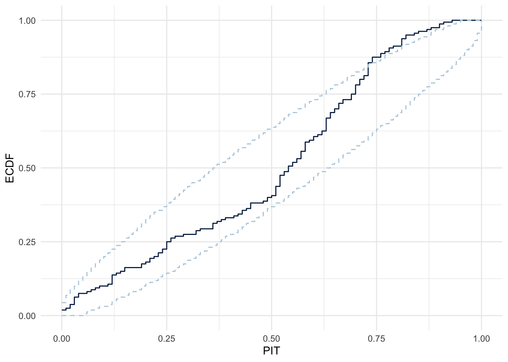
Overlay plot:
prediction <- task4_df %>%
mutate(error = abs(data_to_screen_slope(data.ans.slope) - data_to_screen_slope(data.select.slope))) %>%
add_predicted_draws(model.lognormal, ndraws = 100)
prediction %>% ggplot() +
stat_slab(aes(x = .prediction),
fill = "lightblue", alpha = 1) +
geom_dots(data = task4_df, aes(x = data_to_screen_slope(data.ans.slope) - data_to_screen_slope(data.select.slope))) +
xlim(0, 10)Warning: Removed 957 rows containing missing values or values outside the scale range
(`stat_slabinterval()`).
task4_df %>% modelr::data_grid(error = 0) %>%
add_predicted_draws(model.lognormal, re_formula = NA, ndraws = 100) %>%
ggplot() +
stat_slab(aes(x = .prediction),
fill = "lightblue", alpha = 1) +
geom_dots(data = task4_df, aes(x = data_to_screen_slope(data.ans.slope) - data_to_screen_slope(data.select.slope)))
loo(model.exponential, model.lomax, model.weibull, model.lognormal,
moment_match = TRUE) Output of model 'model.exponential':
Computed from 12000 by 160 log-likelihood matrix.
Estimate SE
elpd_loo 172.6 27.1
p_loo 29.8 6.8
looic -345.2 54.2
------
MCSE of elpd_loo is 0.1.
MCSE and ESS estimates assume MCMC draws (r_eff in [0.4, 1.9]).
All Pareto k estimates are good (k < 0.7).
See help('pareto-k-diagnostic') for details.
Output of model 'model.lomax':
Computed from 8000 by 160 log-likelihood matrix.
Estimate SE
elpd_loo 199.2 31.8
p_loo 43.0 5.1
looic -398.5 63.5
------
MCSE of elpd_loo is 0.1.
MCSE and ESS estimates assume MCMC draws (r_eff in [0.3, 1.3]).
All Pareto k estimates are good (k < 0.7).
See help('pareto-k-diagnostic') for details.
Output of model 'model.weibull':
Computed from 12000 by 160 log-likelihood matrix.
Estimate SE
elpd_loo 289.4 42.4
p_loo 28.7 4.4
looic -578.8 84.8
------
MCSE of elpd_loo is NaN.
MCSE and ESS estimates assume MCMC draws (r_eff in [0.6, 1.7]).
All Pareto k estimates are good (k < 0.7).
See help('pareto-k-diagnostic') for details.
Output of model 'model.lognormal':
Computed from 8000 by 160 log-likelihood matrix.
Estimate SE
elpd_loo 252.6 40.5
p_loo 42.6 10.6
looic -505.2 80.9
------
MCSE of elpd_loo is NaN.
MCSE and ESS estimates assume MCMC draws (r_eff in [0.8, 1.5]).
All Pareto k estimates are good (k < 0.7).
See help('pareto-k-diagnostic') for details.
Model comparisons:
elpd_diff se_diff
model.weibull 0.0 0.0
model.lognormal -36.8 7.1
model.lomax -90.1 23.0
model.exponential -116.8 29.7 The weibull model performs the best. This can also be seen from the posterior predictive checks:
pp_check(model.exponential, ndraws = 100, type = "pit_ecdf") +
labs(title = "Exponential")
pp_check(model.lomax, ndraws = 100, type = "pit_ecdf") +
labs(title = "Lomax")
pp_check(model.weibull, ndraws = 100, type = "pit_ecdf") +
labs(title = "Weibull")
pp_check(model.lognormal, ndraws = 100, type = "pit_ecdf") +
labs(title = "Log-Normal")
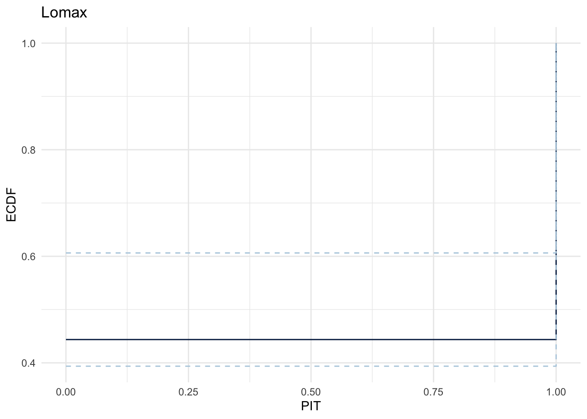
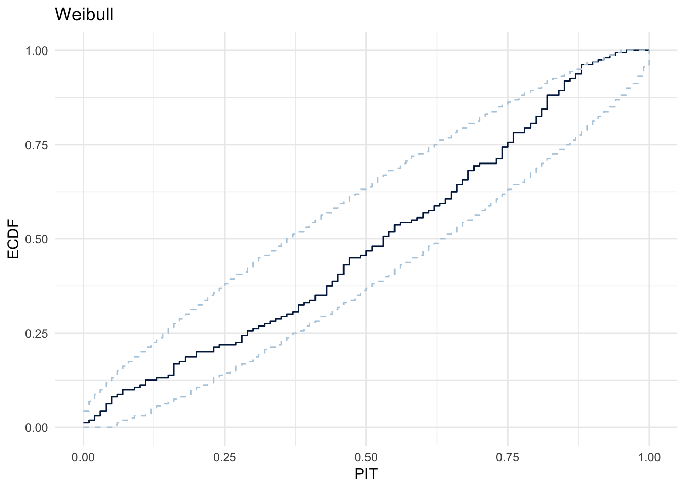